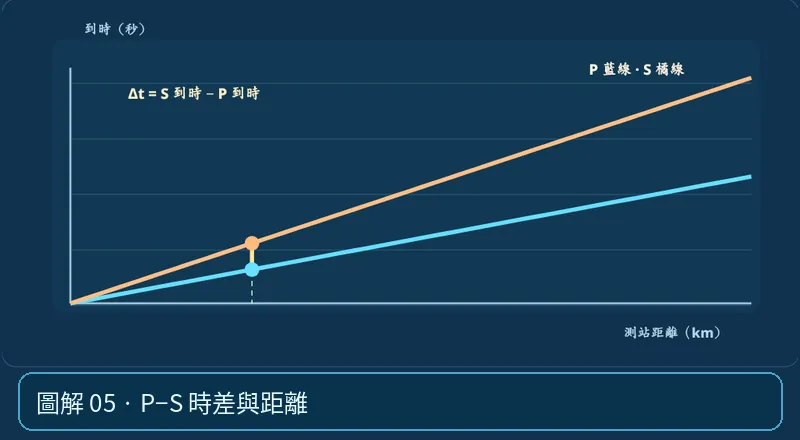

第 01 單元｜圖解 5/6｜課本 p.66–67
P−S 時差與距離
一個測站記到的 P 與 S 到時差越大，一般表示震源距離越遠；單站只能估距，不能知道方向。課堂簡化模型中距離≈時差÷(1/vS−1/vP)。
① 看一眼② 操作圖③ 自己推理④ 揭開解答
🔬 這張圖，請自己動手試
操作圖上方的頁籤、滑桿或按鈕；圖片也能左右滑動放大觀看。
互動圖解 · P−S 時差與距離

原創 SVG 地科教學模型，方便理解，非真實比例、非即時地震資料；互動無法載入時仍有靜態圖。
STEP 01 · 先觀察
👀 眼睛先找線索
在 P−S 走時圖把測站拉遠，找同一個距離上的 P 線與 S 線；比較兩個到達時間的垂直差。
💡 為什麼是這樣？
P 波速度較快，離震源越遠累積的領先時間通常越大；單站由時差只能估「離多遠」，無法直接知道震央在哪個方向。
🎯 換個問法想一題
P−S 到時差比較大的測站，代表地震規模一定比較大嗎？
我想好了，點開看答案 ↓
不是。相同速度模型下，P−S 時差主要反映震源距離，不是規模直接指標。
⚡ 一句記住：時差大不等於震度強